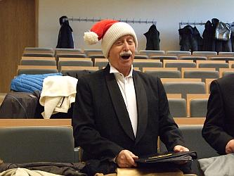

A tymczasem w Cameracie...
.
2013-12-08
Czyli jak głosi w aktualnościach UM WIELICZKA my też tam śpiewamy a więc udajemy się na występy dla naszych milusińskich. Spotykamy się na krótkiej próbie przed koncertem. Wszyscy w pięknych Mikołajkowych czapeczkach ?A tak z ciekawości . . . ciekawe skąd się wzięły??? Ale musicie przyznać, że wyglądamy super, chociaż nie wiem czy to Mikołaj , skrzat czy krasnoludek. Nie ważne! Ważne że radosny.

Teraz zaczynamy występ i też na wesoło, bo to dla dzieciaczków.


© Stowarzyszenie Muzyczne Chór Camerata Wieliczka
Projekt i wykonanie:  Prowadzenie strony: Małgorzata Wysocka-Cebula
Prowadzenie strony: Małgorzata Wysocka-Cebula